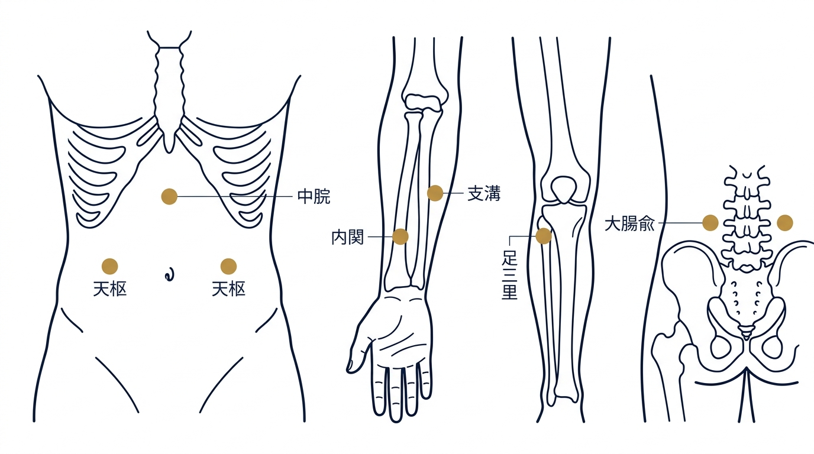

乳児期から黄疸や強いかゆみが続く遺伝性の胆汁うっ滞疾患。小児肝臓専門医の治療を最優先に、ご家族や成長後の体調管理に寄り添います。
肝細胞から胆汁を排泄する働きに関わる遺伝子異常（常染色体劣性遺伝、PFIC1〜5型）によって生じ、保因者の両親から1/4の確率で発症します。血液検査では直接ビリルビン・総胆汁酸・肝逸脱酵素が高値となる一方、一般にγ-GTPは上昇しないのが特徴です。進行すると肝線維化・肝硬変や、脂溶性ビタミン欠乏による出血・骨粗鬆症を招きます。（公式解説）
このようなお悩みはありませんか？
当院の施術アプローチ
実際の施術ではお一人おひとりの体質・症状に合わせて選穴しますが、消化器機能障害（機能性ディスペプシア・IBS・便秘・逆流性食道炎）の臨床でよく用いられる代表的なツボの目安です。

| ツボ名 | 位置の目安 | 主な狙い | セルフケアの注意点 |
|---|---|---|---|
| 足三里（あしさんり） | 膝のお皿の外側下から指4本分下、すね外側 | 胃腸機能全般・胃もたれ・下痢・便秘ケア | 食直後の強い刺激は避け心地よくお灸・指圧 |
| 中脘（ちゅうかん） | みぞおちとおへそを結ぶ線の中央 | 機能性ディスペプシア・胃もたれ・逆流症状 | 食直後の押圧は吐き気を誘発するため空腹時・温熱推奨 |
| 天枢（てんすう） | おへその左右それぞれ指3本分外側 | 便秘・下痢・過敏性腸症候群の腸蠕動調整 | 強い深押しは避け「の」の字さすりや温灸で |
| 内関（ないかん） | 手首内側横ジワから肘側へ指3本分、2腱の間 | 吐き気・胸やけ・ストレス性胃腸不調の緩和 | しびれが出る強圧は避け軽めに |
| 支溝（しこう） | 手首外側の横ジワから肘側へ指4本分 | 慢性便秘・脇腹の張り感の緩和 | 皮膚が薄いためお灸の低温やけどに注意 |
| 大腸兪（だいちょうゆ） | 骨盤上端の高さ（第4腰椎下）から指2本外側 | 便秘・下痢・下腹部の冷えや張りケア | 温熱シートや軽い圧迫にとどめる |
国際的な医学データベース（PubMed・Cochrane等）で報告されている消化器機能障害（機能性ディスペプシア・IBS・便秘・逆流性食道炎）領域の代表的な査読済み鍼灸研究をまとめています（標準治療との併用や研究上の限界を含めて正確に掲載）。
| 年・研究デザイン | 対象・規模 | 主な結果 | 限界・出典 |
|---|---|---|---|
| 2016年 大規模多施設RCT | 慢性重症機能性便秘 1,075名（15病院） | 週平均完全自発排便回数が電鍼+1.76 vs シャム+0.87（P<0.001）、20週追跡時も持続（P<0.001）。 | 20週以降の長期経過は未評価。 Ann Intern Med (PMID: 27618593) |
| 2020年 多施設RCT | 機能性ディスペプシア（PDS）278名（5施設） | 4週時点の総合改善反応率83.0% vs シャム51.6%（P<0.001）、終了後12週間維持。 | 16週脱落率18%・施術者盲検化不可。 Ann Intern Med (PMID: 32422066) |
| 2025年 多施設RCT | 下痢型過敏性腸症候群（IBS-D）280名（6病院） | 6週時点の複合反応率57.9% vs シャム41.4%（RR 1.40, P=0.008）、重篤な有害事象なし。 | IBS-D限定・中国多施設試験。 Gastroenterology (PMID: 40441496) |
| 2017年 メタ解析 | 胃食道逆流症（GERD）12 RCTs（n=1,235） | 鍼＋西洋薬併用は西洋薬単独より総合改善優位（RR 1.17, p=0.03）、再発率低下（RR 0.42, p<0.001）。 | 組入れ試験の質が低く標準治療との併用が前提。 Acupunct Med (PMID: 28689187) |
参考文献・出典
飲酒が主因でない脂肪肝に炎症・線維化が加わった状態。食事と運動での減量を軸に、倦怠感や生活リズムの乱れを鍼灸で支えます。
肝内の小胆管が自己免疫により障害される慢性疾患。専門医の服薬継続を軸に、かゆみや倦怠感に伴う心身の負担を和らげます。
チフス菌による三類感染症。発症時は速やかな医療機関受診と抗菌薬治療が必須であり、当院では完治後の体力回復期のみサポートします。
慢性的な胃酸逆流により食道粘膜が変化した状態。定期的な内視鏡検査を前提に、逆流性食道炎の症状緩和と生活改善を支えます。
3日以上排便がない状態や残便感。腸の蠕動運動と自律神経のバランスを整え、自然な排便リズムを取り戻すお手伝いをします。
消化管に慢性の炎症や潰瘍が生じる指定難病。専門医の治療と食事管理を軸に、体調の波や自律神経の乱れを穏やかに整えます。
おひとりで悩まず、まずはご相談ください
銀座本院・川口・大宮・横浜・博多・田無の各院でご予約を承っております。